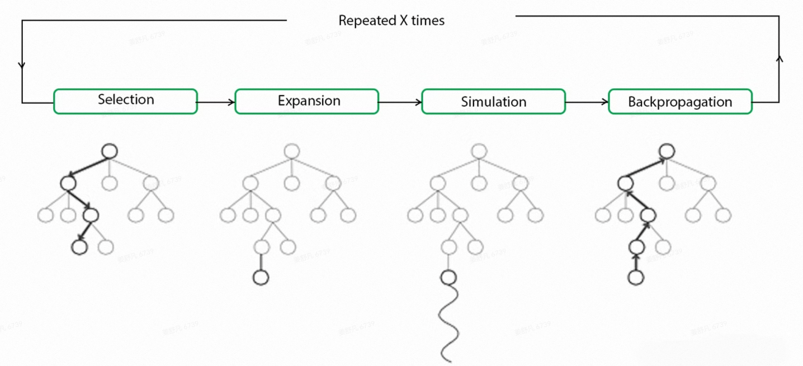

蒙特卡洛树搜索与大语言模型的结合¶
1. 引言¶
由于 AlphaGo/AlphaZero 的巨大成功，在讨论 o1-like 模型时，研究者们都猜测 MCTS 是其成功的关键组件，它不仅可以在推理阶段优化决策过程，又可以产生训练数据迭代训练，所以，我们需要了解 MCTS 都是怎么与 LLM 结合使用：
- 提高复杂问题推理能力：使用 MCTS 扩充模型的搜索空间，使其得到更加多样的答案，然后使用相关的算法选择置信度最高的作为最终结果
- 优化训练数据：使用 MCTS 进行数据增强，然后将新数据用于模型迭代
2. 蒙特卡洛树搜索¶
蒙特卡洛树搜索 (Monte Carlo tree search, MCTS) 是一种用于某些决策过程的启发式搜索算法，常用于解决博弈树问题，该算法是在线的，即动作选择和动作执行交错进行。
MCTS 基于搜索空间的随机采样扩展搜索树，其基本过程是使用模拟来构建一棵树。已评估的状态存储在搜索树中，评估状态集是通过迭代以下四个步骤逐步构建的：
$$ Rollout = Select + Expand + Simulate + Backpropagate $$ 
{kind=link}
- 选择(Selection)：从根节点（当前游戏状态）开始，使用一种策略（如UCT算法）来沿着树向下选择连续的子节点，直到到达叶节点。其中，UCT算法平衡了探索（exploration）和利用（exploitation），每次选择具有最高 UCB1 值的子节点；
- 拓展(Expansion)：除非最终到达的节点是终止状态，否则在选定的叶子节点上扩展树，添加一个或多个新的子节点，每个子节点代表一个可能的合法移动。然后，从这些新节点中选择一个节点 C 进行下一步操作；
- 模拟(Simulation)：从扩展的节点C开始，进行一次随机模拟，直到游戏结束。在模拟过程中，随机选择移动，直到达到终止节点，模拟的结果用于评估节点 C 的价值；
- 回溯(Backpropagation)：将模拟的结果从叶子节点 C 反向传播回根节点，更新路径上所有节点的统计信息。根据模拟的结果，更新路径上每个节点的收益和访问次数。
一次 Rollout 为执行一轮 Select + Expand + Simulate + Backpropagate 的过程。
3. UCT 选择决策¶
选择决策主要使用了 UCT (Upper Confidence bounds applied to Trees) 算法，UCT 算法是 MCTS 与 UCB1 策略的结合，即 UCT = MCTS + UCB1。
UCB (Upper Confidence Bound, 置信区间上界)：在博弈树的每个节点中应选择值最大的节点 (UCB1)
- \(q_i\)：表示节点 \(i\) 的收益
- \(n_i\): 表示节点 \(i\) 的访问次数
- \(c\): 探索参数，理论值为 \(\sqrt{2}\)，用于对探索 (exploration) 和利用 (exploitation) 的平衡
- \(N_i\): 表示节点 \(i\) 的父节点的访问次数
其中加号前面是该节点当前的收益均值，后面的本质上是均值的标准差。这个公式反映：收益均值越大，被选中的概率越大，起到了 exploit 的作用；同时第二项使得那些被选次数较少的节点也会得到试验机会，起到了 explore 的作用。
4. 代码框架¶
MCTS¶
选择 (Selection)¶
拓展 (Expansion)¶
模拟 (Simulation)¶
回溯 (Backpropagation)¶
Rollout¶
Choose \(\arg\max_{a\in A(s)}Q(s_0,a)\)¶
5. PUCT 选择决策¶
传统的 MCTS 一个明显的缺点是Q(s,a)需要执行完整的 Simulation 操作。
在 AlphaZero 中，选择策略使用了UCT的变体，PUCT（Predictor Upper Confidence Bound for Trees）：
其中，前半部分鼓励模型选择得分高的动作，后半部分鼓励模型探索，P(s,a)为动作概率，用于提升探索的效率，\(c_{puct}\)同样是平衡因子，用于平衡探索和利用。
当选择一个叶子结点\(s_t\)时，需要对叶子节点进行扩展和评估，不同于传统的 MCTS，AlphaZero 用神经网络的预测\(V(s_t)\)代替了 Simulation（同时也预测\(P(s_t|\cdot)\)），这样显然提升了搜索的效率。
回溯过程中，用\(V(s_t)\)来更新从根结点到叶子结点的所有\(Q(s,a)\)：
与传统MCTS的差异¶
-
传统 MCTS 方法中，\(Q(s,a)\)基于完整 Simulation 得到的估计值。而 AlphaZero 直接用神经网络估计\(V(s_t)\)，从而能够有效减少搜索的深度，大大提高了估计的效率。
-
传统 MCTS 方法中，探索项的分子仅仅是访问次数，与状态动作对\((s,a)\)的性质无关。AlphaZero 考虑到了在人类专家经验中，不同的状态动作对\((s,a)\)出现的先验概率\(P(s,a)\)，有效地减少了搜索的宽度。
6. LLM + MCTS 推理决策¶
LLM 与 MCTS 结合的难点¶
- 广阔的搜索空间，由于词表或者句子的组合情况非常巨大，导致搜索效率较低
- 模糊的反馈，语言模型有可能存在多个 token 都合适，或者多种语言表达都合理的情况，没有绝对的正确和错误，导致反馈信息模糊
实际应用中如何定义状态、动作、奖励¶
RAP¶
LLM（作为推理者）在 LLM（作为世界模型）和任务特定奖励的指导下逐步构建推理树，并在广度与深度之间取得适当的平衡，从而有效地获得高奖励推理路径
{kind=link}
三种应用示例
{kind=link}
-
RAP用于 Blocksworld 中的计划生成
-
状态：块到目前为止的状态
- 动作：对块的四种操作（STACK、UNSTACK、PUT 和 PICKUP）
- 奖励：首先用一些示例测试用例及其解决方案提示 LLM，然后计算给定当前状态下动作的对数概率，表示为 r1。当离目标只剩几步时，它通常比较准确，而对于遥远的目标则不那么可靠。此外，将执行动作后的新状态与目标进行比较，并提供奖励 r2，与满足条件的块的数目成比例
{kind=link}
- GSM8K 中的数学推理
- 状态：定义为中间变量
- 动作：是提出关于新中间变量的增量子问题
- 奖励：将 LLM 对上个动作的有用性自评和当前状态的置信度相结合，这个奖励函数鼓励提出更相关且有用的子问题
{kind=link}
-
PrOntoQA 中的逻辑推理
-
状态：关注的事实，类似于人类用于推理的工作记忆
- 动作：定义为从事实集中选择一个规则
- 奖励：通过自我评估计算，具体来说，用一些带有标签的例子来提示 LLM，以帮助它更好地理解推理步骤的质量
{kind=link}
如何高效地构建动作空间¶
rStar¶
按照人类的思维方式，总结出了可能采用的 5 种解决问题的方法，构造一颗搜索树
MCTS 的作用主要是将复杂问题拆分成多个或者多步执行的子问题，其依据是设定的动作空间，即树搜索的范围。而 LLM 的作用是根据指定的动作生成候选答案或者生成评估验证的反馈，那么存在的问题是 LLM 输出通常是无限、连续的动作空间。那么如何设置动作空间以保证既充分又完备
{kind=link}
A1（propose a one-step-thought）
每次提出一个推理step，直到生成最后的答案。每个step的形式是 "该step的推理文字+该step的答案"，最后一个step以"The answer is"开头，表示产出了原始问题的最终答案：
A2（propose the remaining thought steps）
对于简单的问题，并不需要步步思考，可以一次性通过一些简单的推理后直接给出答案：
A3 (propose next sub-question along with its answer)
把原始问题拆解成很多子问题，然后回答一个个子问题，最终给出答案，例如：
其中，Question 1.3属于终结类型的子问题，因为回答它就等于回答了最终答案。
A4 (Answer the sub-question again)
与A3搭配使用，例如，对于A3的Question1.1，并不确定Answer1.1是否正确，此时重新再思考一次Answer1.1的答案。由于只是对某一个子答案做修正，可以采用A2的方式，做一些简单的推理，重新取得Answer1.1，相当于把Answer1.1用做一次A2得到的输出结果进行替代：
A5（Rephrase the question/sub-question）
在大段的原始题目描述中，把关键信息提取出来，例如：Condition1..., Condition2等等。可以先通过这种方式改写原始题目/子题目，然后再做回答：
如何进行过程验证和评估¶
过程监督可以说是 MCTS + LLM 中的关键步骤，无论生成的结果是否正确，无法有效评估和判断，则同样是没有价值的，当前的过程评估方法大概有以下几种：
- 专家式：使用另一个更好的（当然也可以是本身）的 LLM 作为专家来判断生成的结果是否正确、合理
- 集成式：类似于集成学习的方法，即同时生成多个答案，通过答案之间的一致性来进行判断 （rStar 采用同行评审般的一致性选择）
- 奖励式：即专门训练一个 PRM 来为结果进行打分，其思想即源于 RL 的 reward model
7. MCTS 优化 LLM 训练¶
如何评估推理步骤的质量，自动标注推理过程的标签¶
MATH-SHEPHERD¶
基于 MCTS 中 simulate 的思想，将推理步骤的质量定义为 '它推断正确答案的潜力'，使用多次随机 Simulate 标注推理过程的标签，用于训练一个好的 PRM
Outcome Reward Model & Process Reward Model
其中\(y_s\)是标准答案，\(y_s=1\)表示正确，\(y_s=0\)表示错误。
其中\(y_{s_i}\)是标准答案，\(y_{s_i}=1\)表示步骤\(s_i\)正确，\(y_{s_i}=0\)表示步骤\(s_i\)错误。
{kind=link}
Hard Estimation (HE)
Soft Estimation (SE)
Ranking for Verification (Self-Consistency + Reward Model)
{kind=link}
{kind=link}
如何自动获取高质量推理路径，并有效处理奖励信号以进行验证和 offline learning 自我训练¶
ReST-MCTS*¶
使用 MCTS 优化 LLM 的训练，不同于 AlphaGo 中 MCTS + RL 的 online learning 的形式，而是 offline learning 的形式，即通过产生更加高质量的数据来训练 LLM
{kind=link}
- \(v_k\): 部分解\(p_k=[s_1,s_2,...,s_k]\)的质量；
- \(m_k\): 部分解\(p_k\)的推理距离\(m_k\)为从\(p_k\)开始，策略模型达到正确答案所需的最小推理步数；
- \(w_{s_k}\): 单步加权奖励\(w_{s_k}\)，反映当前步骤\(s_k\)的质量，基于常见的 PRM 奖励\(r_{s_k}\)，进一步将推理距离作为权重因子，反应\(s_k\)的增量进展；
Quality Value 的计算
Weighted Reward 的计算
其中，\(m_k=K-k\)，\(K\)是解决方案\(s\)的总推理步数，\(r_{s_k}\)沿用了MATH-SHEPHERD的方法。
所以，一旦我们有了精确的\(r_{s_k}\)(PRM) 和\(m_k\)的预估，就可以直接预测部分解决方案\(p_k\)的质量值\(v_k\)来引导搜索，并且可以简单地训练一个过程奖励模型\(V_\theta\)来预测\(v_k\)，作为常见 PRM 的一种变体。
训练流程 Step0
{kind=link}
初始时刻用 BFS 构建搜索树，根据数据的标签验证所有叶节点的答案是否正确，计算\(m_k\)和使用硬估计（Hard Estimation）方法计算\(r_{s_k}\)，按照上述公式计算\(v_k\)。将所有提取的部分解决方案及其质量值\(v_k\)组合成训练集\(DV_0\)。这些数据用于训练初始值过程奖励模型\(V_\theta\)，使其能够评估部分解决方案的质量:
{kind=link}
{kind=link}
训练流程 Step1
由于不想直接像 AlphaZero 一样简化掉 Simulation 阶段，所以最关键的步骤为 MCTS* 中的贪婪蒙特卡洛展开 (Greedy MC Rollout)，从扩展的节点C′开始，逐步生成推理步骤，并使用过程奖励模型\(V_\theta\)评估每一步的质量值。记录模拟过程中获得的最大质量值\(v_{max}\)，使用加权平均方法更新节点的质量值：
Greedy MC Rollout 通过选择最有价值的推理路径，减少了搜索空间，提升了搜索效率。
训练流程 Step2
{kind=link}
{kind=link}
{kind=link}
重复 step1 和 step2，最终得到训练好的策略模型和过程奖励模型
{kind=link}
把 AlphaZero 的策略迁移到 LLM¶
Super_MARIO¶
迁移 AlphaZero 的范式，迭代训练 Step-level Value Model \(V_\phi(s)\) 和策略模型 \(\pi_\theta\)，且两者是具有不同最终层的相同模型
{kind=link}
状态更新 \(f(s_{t+1}|s_t,a_t)\)
Step-level Value Model \(V_\phi(s)\)
创建训练信号的方法是使用 MCTS 中的 Simulation 思想，其中，\(r(\cdot|s_t)\)表示表示从状态\(s_t\)开始，一次模拟中最终结果的奖励：
对于任何给定的部分回复\(s\)，使用以下回归损失来训练 Step-level Value Model \(V_\phi(s)\)：
PUCT algorithm
{kind=link}
在 Selection 阶段，根据 PUCT 算法来探索树 \(T_k\)：
其中，先验\(\pi(a|s_t)\)被定义为步骤\(a\)中所有 token 的对数概率的平均值的指数：
在选择阶段之后识别出的叶节点\(s_t\)的评估：
MCTS 中的中间价值估计\(V^*\)和 Value Model 的训练信号\(V\)不同，参数\(\lambda\)用于平衡价值模型估计与 Simulation 过程中获得的经验奖励的贡献，\(\lambda\)采用了与 AlphaZero 相同的策略。但LLM推理的树深度远比围棋游戏浅（例如，最大深度为8），且容易到达终止节点，所以设置指示函数\(\lambda = I_{terminal}(s_t)\)，如果扩展的节点是终端节点，则返回奖励；否则，价值由模型\(V_{\phi_k}\)预测。
Backup 策略
完全参考AlphaZero的策略：
价值估计
运行了N次模拟后，得到了最终的搜索树\(T_k\)，\(Q(s_t,a_t)\)表示在状态\(s_t\)下采取动作\(a_t\)所能获得的预期回报，这个值是根据贝尔曼方程计算的，故对于非终止节点：
于是可以直接拟合非终止节点的 State-Action Value：
迭代训练
{kind=link}
以一个预训练的语言模型（LLM）作为策略模型 \(\pi_{\theta_1}\)开始，添加了一个辅助线性层用于预测\(V\)，策略模型\(\pi_\theta\)和价值模型\(V_\phi\)共享了大部分参数。随着 MCTS 轮次中的模拟不断进行，终止节点的奖励(\(\pm1\))会被回传到其祖先节点，中间节点的估计值\(Q^*\)会逐渐收敛到真实的值，并且该值范围在\([-1,1]\)之间。
训练方法
从第\(k\)轮 MCTS 构建的搜索树\(T_k\)中，采样出对应于终止节点的解路径，这些路径包括预测答案正确的路径（\(x^+\)）和预测答案错误的路径（\(x^-\)），以及这些路径上每个节点的价值估计。使用一个多任务损失函数来同时更新策略模型和价值模型:
其中\(T(x)\)表示解路径\(x\)的步数，得到新的\(\pi_{\theta_{k+1}}\)和\(V_{\phi_{k+1}}\)后，开始下一轮 MCTS。
{kind=link}